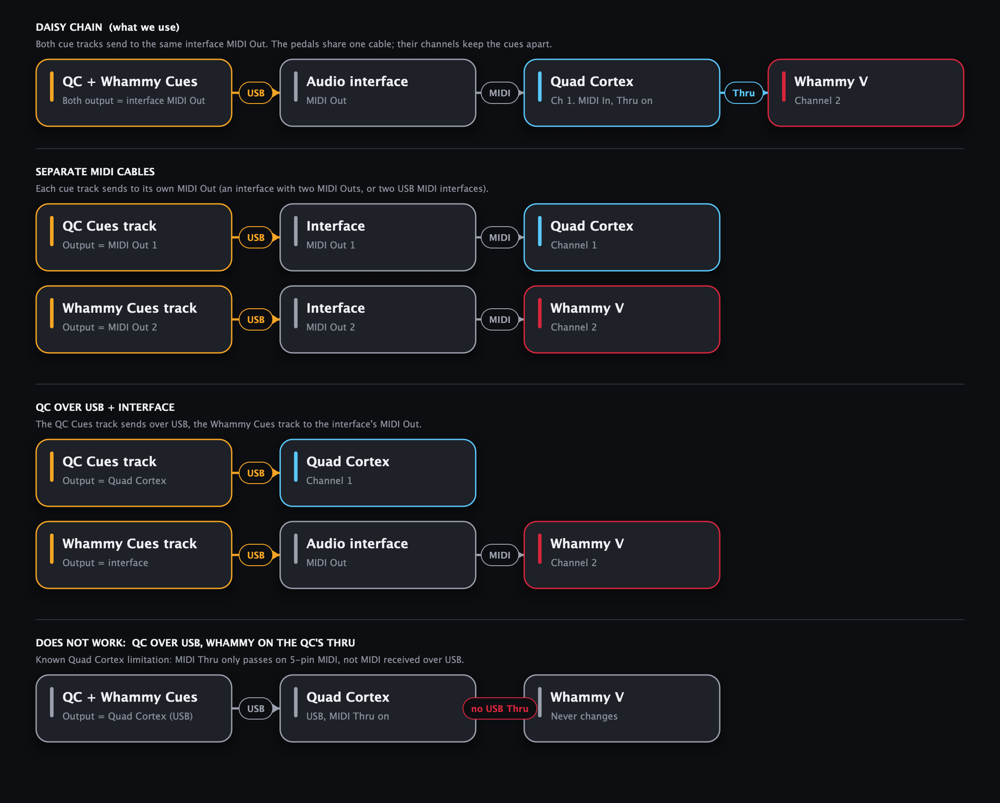

Stop typing CC numbers into MIDI clips. Drag a preset, a scene or a treadle move onto your DAW timeline, and it lands as a named MIDI clip at that bar. Press play, and your rig follows the song.

Tested in Reaper; works in any DAW that can drag in MIDI clips and send a MIDI track to your pedals.
Your QC presets, scene names and colours as tiles. Sync your setlists, preset names, scene names and colours straight from the QC over USB. Scenes laid out like the pedal: A–D on top, E–H below. Scenes and stomps load their own preset first, or act on the one already loaded.
Footswitch on/off, tuner for guitar changes, and Preset / Scene / Stomp mode, each one drag away.
Laid out like the pedal's panel, Classic or Chords, engaged or bypassed, with heel-first switching.
Ramps, dives, trills and bends as tempo-synced CC#11 automation, or draw your own with the mouse.
Every drop is a clip called "Chorus" or "Whammy Dive 1 bar", so you read your show at a glance.
A quick first-run tour and step-by-step DAW setup (Reaper as the example) for three ways of connecting your pedals. Note: the Quad Cortex's MIDI Thru doesn't pass on USB MIDI, so the Whammy needs a 5-pin MIDI path from an interface.
Drag any tile onto the arrangement. Click its play button to test it on the pedal first. Click a picture to enlarge it.





No code or build tools needed. Full details in the user guide.
PedalCues.vst3 to C:\Program Files\Common Files\VST3\PedalCues.exe to test tiles without a DAW (pick the MIDI port in its MIDI Setup tab). If you see "Windows protected your PC", click More info > Run anyway.xattr -cr ~/Downloads/PedalCues-macOSPedalCues.vst3 to ~/Library/Audio/Plug-Ins/VST3/ and PedalCues.component to ~/Library/Audio/Plug-Ins/Components/
(in Finder, Cmd+Shift+G opens a path)PedalCues.app to Applications to test tiles without a DAW (pick the MIDI port in its MIDI Setup tab).PedalCues.vst3 to ~/.vst3/ and PedalCues.lv2 to ~/.lv2/../PedalCues.echo 'KERNEL=="hidraw*", ATTRS{idVendor}=="152a", TAG+="uaccess"' | sudo tee /etc/udev/rules.d/70-quad-cortex.rules && sudo udevadm control --reload-rules && sudo udevadm triggerHi, I'm Thanasis. My bandmate Leo and I play in ORIA, a progressive groove metal band from Thessaloniki, Greece. We were tired of programming MIDI by hand for every song, so I built PedalCues.
PedalCues is free and open source, and it will stay that way. If it saves you time at rehearsal or on stage, a coffee helps me keep improving it: new features, fixes, and support for more pedals. Completely optional. Thanks for playing loud! 🤘